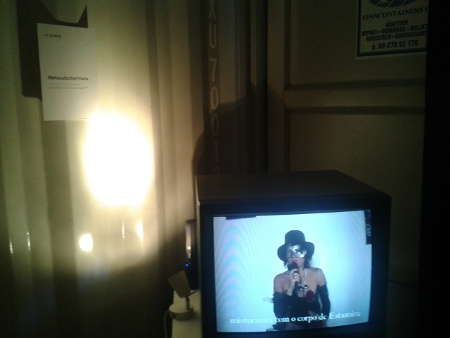
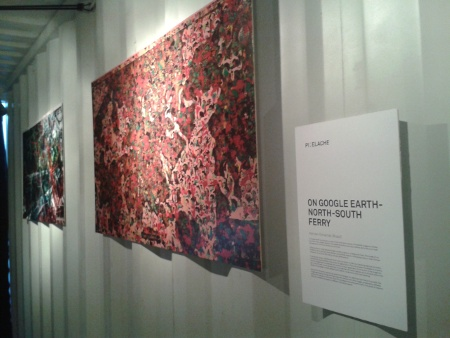
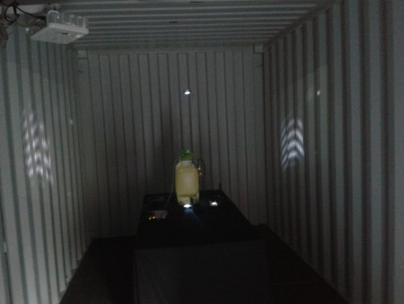
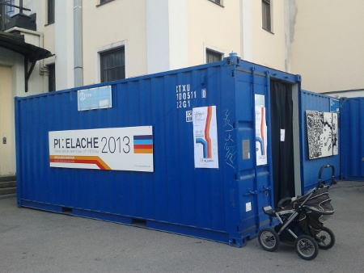
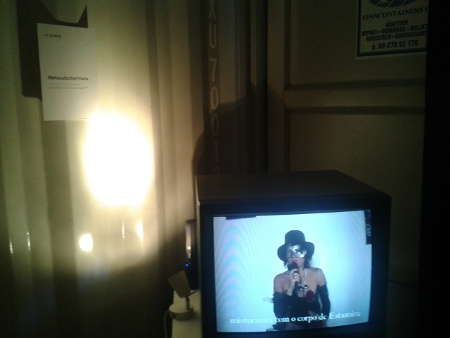
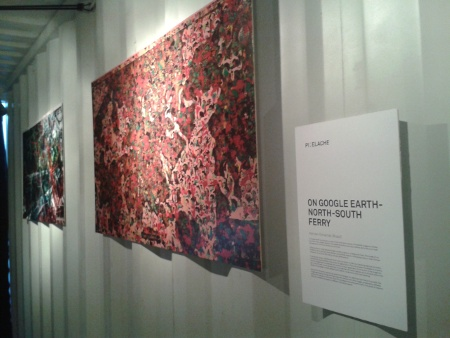
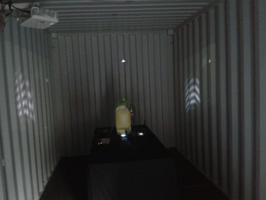
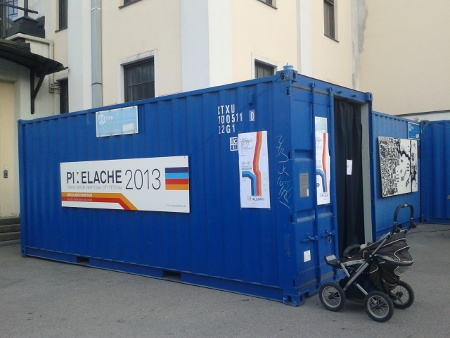

Raquel Rennó compartilhou as imagens do Flickr da Paula [5], e as abaixo, feitas por ela durante o Pixelache 2013 [6].










Raquel Rennó compartilhou as imagens do Flickr da Paula [5], e as abaixo, feitas por ela durante o Pixelache 2013 [6].




Links:
[1] http://mutgamb.org/assunto/Tags/metareciclagem
[2] http://mutgamb.org/assunto/Tags/mutgamb
[3] http://mutgamb.org/tag/pixelache
[4] http://mutgamb.org/tag/raquel-renno
[5] http://www.flickr.com/photos/paulav/sets/72157633734032736/
[6] http://www.pixelache.ac